It’s time for another dev-log, this time I’m going to go over some progress updates for Update 10. It has been coming along well, but there is still plenty of work to do before it is finished. Due to the fact that at some point soon I will have to be secretive about progress to avoid spoilers, I want to make sure I get as much info as I can out there before that time comes. So today we will be going over some of the new things that have been added since Update 9. This is by no means comprehensive, but just the highlights.
Let’s begin!
Overworld
Overworld Menu Redesigns
Starting off strong with the new overworld menus, they have gotten a complete makeover. The layout is overall the same for everything, but with a lot of updates to make it look better and be easier to use. Another goal with the redesigns was to match the style of the new battle menus in the overworld to give a more unified look overall. So in general, things are smaller and a better use of space just like the battle menu. I’ll go over the big changes with all the menus, but here are some before (left) and after (right) shots.
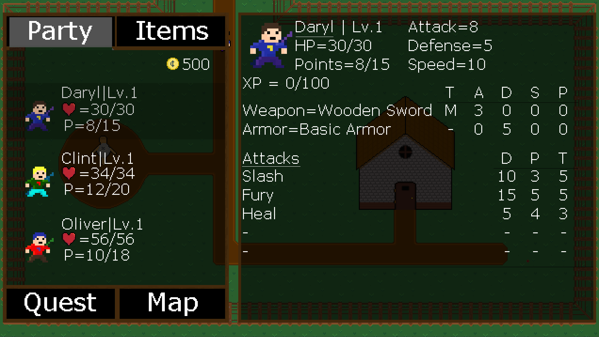
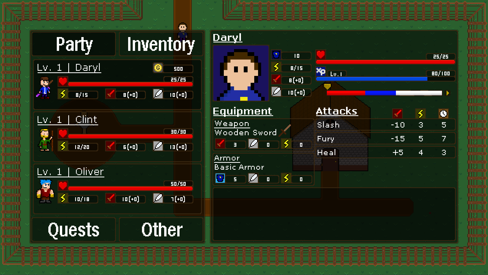
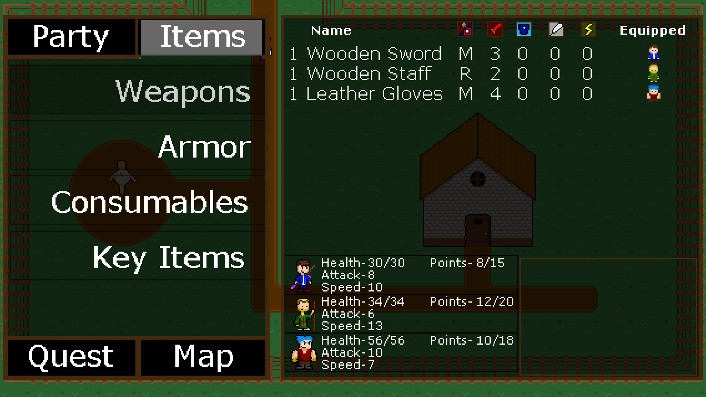
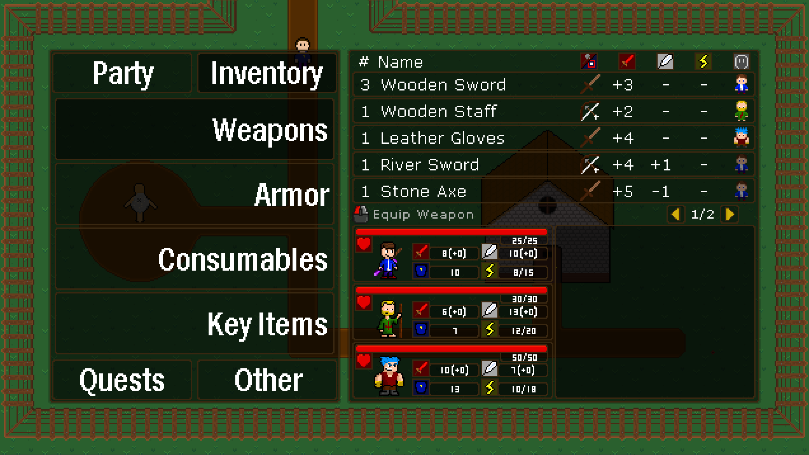
Party Menu
The expanded party menu for individual characters has gotten a new layout. In the past, I just threw new information here as I added it, so it all felt very unorganized, granted it was never meant to be final. This new layout makes much more sense as everything has its own section.
Up top are the player stats including defense, points, attack, speed, health and XP. Health and XP are also now represented by bars instead of strictly numbers. Under the XP bar is the player’s timeline. The timeline may look simple, but it actually has a lot of features. You can click on any point on the timeline to move the arrow and you can click the play button on the right side of the timeline to have the arrow move based on your current speed. You can even hover on the attacks below and you will be shown where they will land on the timeline. Pretty neat!
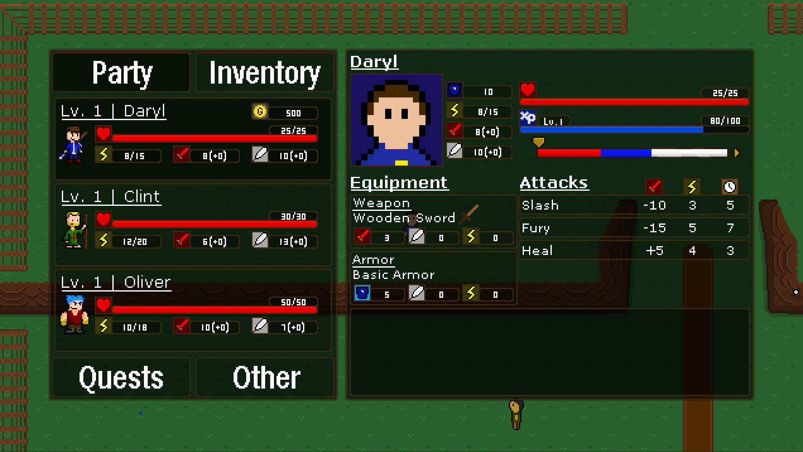
Moving down to the middle portion of the menu, you can see your equipment on the left and your attacks on the right. Everything in the middle area can be clicked to have different results. For example, clicking on either the weapons or armor boxes will take you to their respective menus to switch the equipment. Clicking on the attacks will allow you to swap their positions and change their order. These changes will follow you into battle, so you can order your attacks however you like!
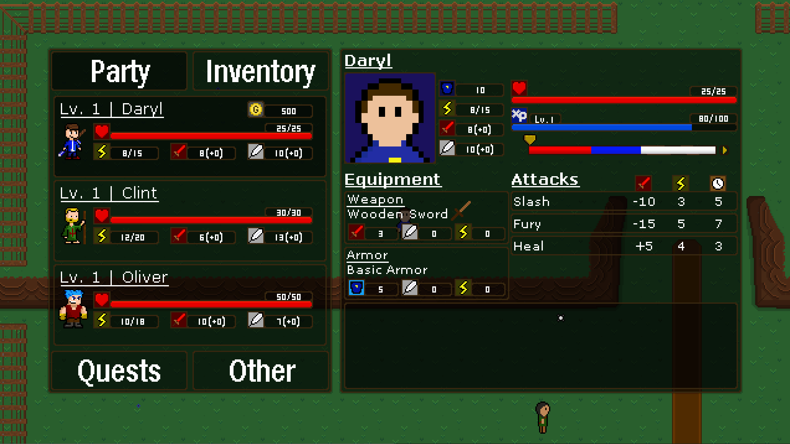
Inventory Menu
Outside of the visual differences, the biggest change in the inventory is the amount of visible item slots at once going from ten to five. We did this to better match the battle’s item menu and to allow more space for all of the elements.
Functionally, the menu is mostly the same with the exception of the process of equipping weapons. Since weapons are unique to each character, you only have to click once on the weapon to equip it.
You may also notice the mouse icon in the middle part of the menu. This will house information of what your options are in terms of using the menu. The information that is displayed will vary by what you are doing and what is relevant to you at that time.
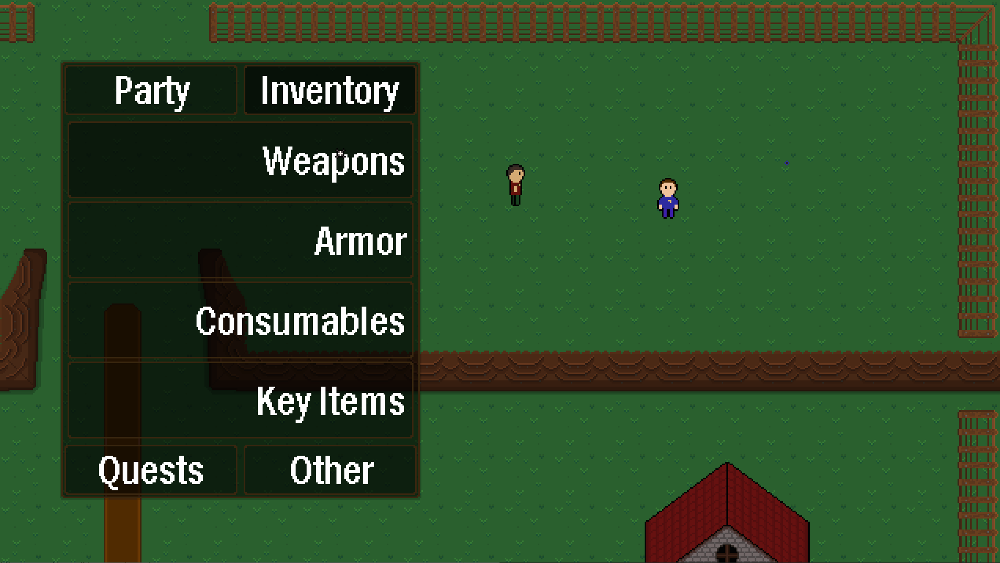
Other Menu
Now let’s move on to something brand new, the Other Menu. The bottom right tab in the overworld menu has been set to “Other” for a while, but there was nothing in there, until now…
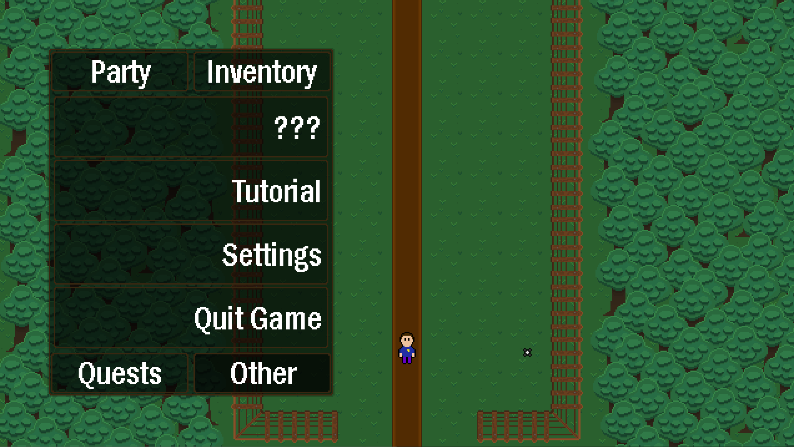
There are 4 new options within the Other Menu. Tutorial, Settings, Quit Game and another mysterious question mark option. I wonder what could be there? I’ll briefly go over what each of these do.
Starting with the Tutorial menu, clicking this will open up a list of guides over on the right. This is an index of information all about the game, how to play, tips & tricks etc. You’ll unlock new tutorials as you play through the game. They are organized by type, Overworld, Battle and Other. The tutorial also uses an updated text controller that can display different colors and sprites within text. Check it out!
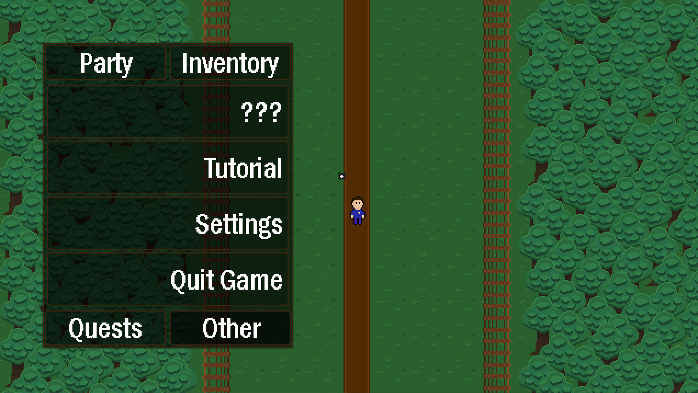
Moving down, we will find the Settings. Here you can change many aspects of the game. It’s broken up between display, audio and gameplay settings. Once your changes are made, you can apply them by click apply at the bottom or revert them to the settings they were previously applied to as by click revert. To reset the settings how they originally were, simply click reset. Feel free to change anything and everything to your heart's content!
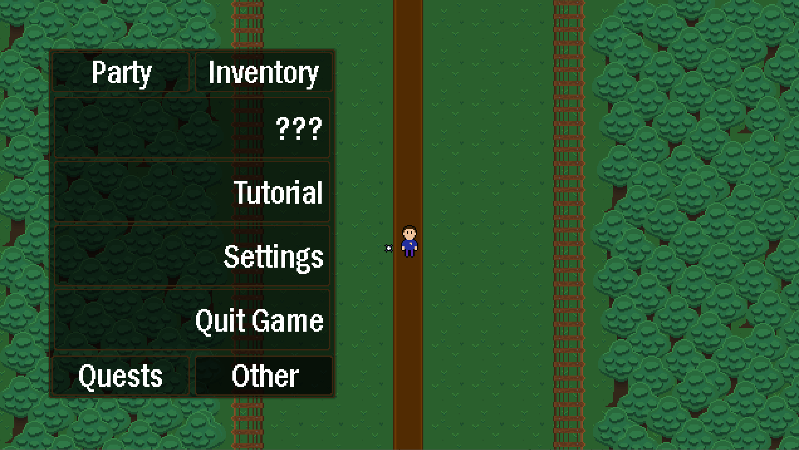
Finally is the Quit option which allows you to quit the game. Unlike the other options, this one will not open a menu when it is clicked, instead you click and hold to use it. By holding down left click, you will close to the desktop and by holding down right click you will be sent back to the title screen. You must click and hold for a few seconds while the button fills up until you are sent back to prevent accidental exits from the game.
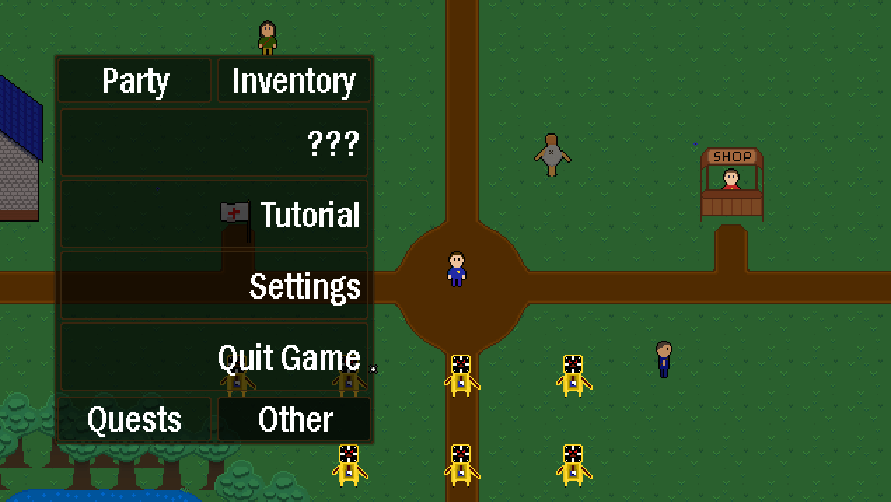
Those are the main changes to the overworld menu. It’s a welcome refresh and I hope it will serve all of your needs when you are playing the game. Oh, by the way, if you want to find out what that mystery option is, you’ll just have to play the game and find out :).
Percentage Based Items
A useful addition are the new percentage based items. In the past, all of the items in the game have exclusively been based on a set number. For example, a Small Healing Packet will restore 10 health. While that may work great when you have 20 health maximum, later in the game as your health gets higher and higher it doesn’t quite cut it anymore.
Percentage based items are different since they are based on the percentage instead on static numbers. For example, the new Arlette Herb will heal 25% of your health, regardless if you max health is 20 or 2000. I hope the value in items like this is clear. Static number items will still be around, but will supplement the percentage based items.
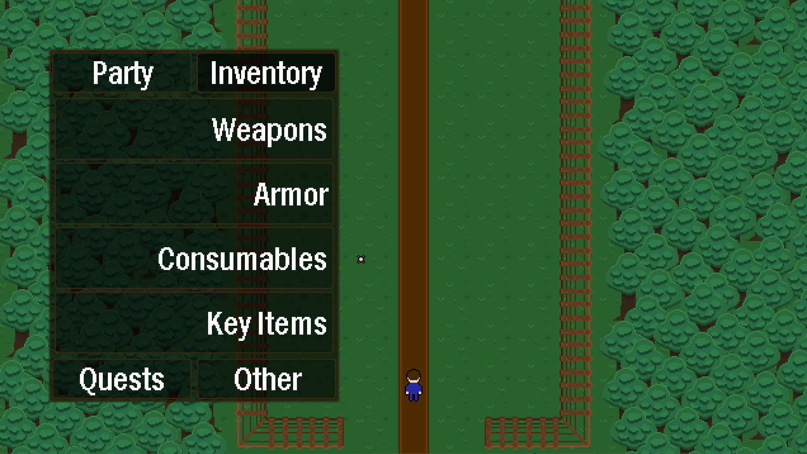
Overworld Optimizations
To wrap up the overworld section, let me briefly go over some of the optimizations that have been made overall.
I mentioned earlier the updated text controller that now supported colored text and sprites. This controller also has a lot of cool optimization features mostly based on GameMaker’s Surfaces. Instead of constantly drawing text to the screen, it will only draw once to a surface and then draw the entire surface instead. This saves an alarming amount of performance and is a strategy that I’ve applied in other places outside of the text controller as well.
The saving system has also been updated a bit when it comes to overworld elements that have different states that must be saved such as chest, doors and NPCs. Before, each overworld element had their own saving system, but now they all fall under one overworld save controller which streamlines and simplifies things considerably.
With all of those overworld changes out of the way, let's move onto the battle…
Battle
New Damage Calculation
Right off the bat, let’s start with the biggest change overall, damage calculation. In the past the damage an attack did was a very simple formula, Attack Damage + Attack Stat. However, I wanted to make it a bit more complicated than that due to leveling up. Since you can level up your attack stat, the actual damage a move does matters less and less and the game progresses. For example, if Slash has a base damage of ten and Fury fifteen, when your attack stat is only five, the difference between Slash and Fury is noticeable. However, when you attack stat is 50, it becomes much less important which attack you actually use.
To combat this issue, I’ve redone damage calculation. It’s loosely based on Pokemon’s way of calculating damage with unique things added. Now attacks have a base power that scales with your attack stat. Characters now also have a defense stat, which before was linked to max health, but it is now its own unique stat. The higher your defense, the less damage you will take.
In-Battle Revives
In Update 9, I added revives which were able to be exclusively in the overworld. However, I have now added the ability to use them in battle! I’m going to be honest, I almost didn’t add them since I knew they were going to be a really difficult feature to add and I labeled it as a “too complicated for the scope of the game”, but I figured the game would overall be worse without them so I decided to put them in. While they did take forever to get working properly (and they are still being worked on), I’m really happy with the way it turned out.
First off, revives will only be usable when there is a fainted player, otherwise you won’t be able to select it. Once a player has fainted, you will be able to select a revive from the items menu and use it on the fainted player. Once it is used, the selected player will be revived.
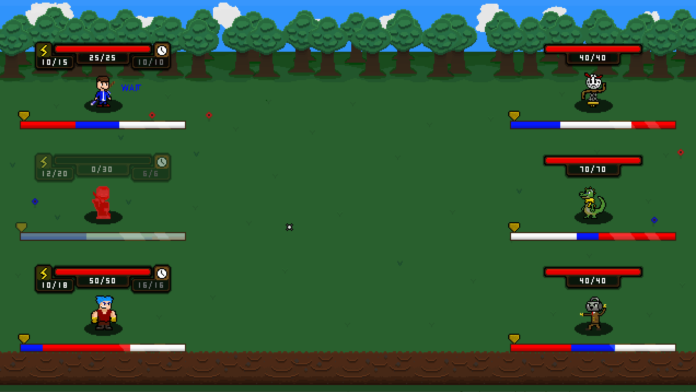
Revives are quite unique in many ways. The first is that revive arrows markers don’t have to account for any time in between the select and the execution of the attack. This is because the fainted player’s timeline is practically frozen until revived, so the revive will always happen right where their timeline arrow is.
That is the basics of it, but you can go much deeper. A standard revive will only heal 1 health, not very useful. This is because you are meant to combo the revive with another healing item, such as a healing packet. So, what you can do is use a revive followed by a healing packet on the fainted player.
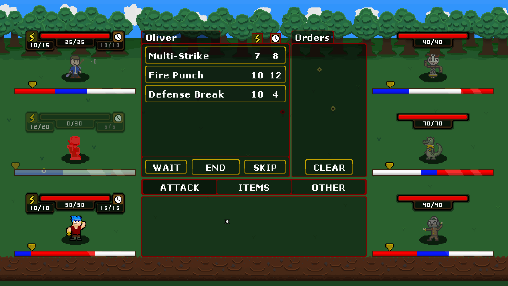
This is part of what makes revives so complicated, selecting a player who is fainted and not even moving. It’s practically the complete opposite of what you would normally be doing. That’s all I’ll show for now, but trust me when I say it really can get really complicated if you want it too, but that’s kind of the point!
Oh also, for those who are wondering, there will be other types of revives that will heal more than 1 health. Maybe some are already in the game...
Victory Screen
There is now a proper victory screen in the game! At the end of Update 9, I was just starting to work on this and I have finally landed on something I like. Check it out…
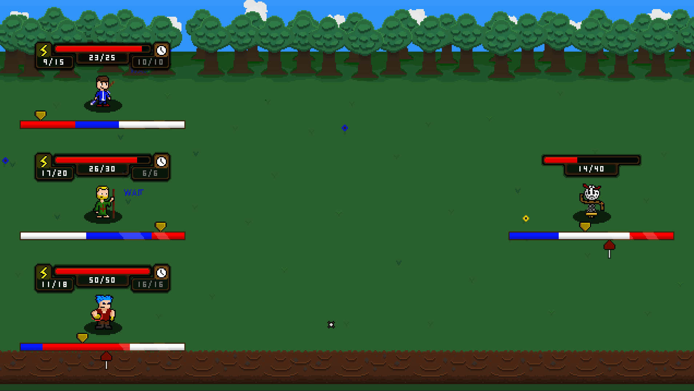
The victory screen shows you how much XP you’ve gained and if anyone leveled up. It’s a great way to end off a battle!
Updated Enemy AI (again…)
Project Phases has had an interesting relationship with enemy AI. I incorporated enemy AI originally all the way back in Update 3 four years ago. That system was extremely basic, but so was the game in general. We still only had one player and one enemy at that time so I didn’t really want to dedicate too much time to AI until I had all the players and enemies in. Fast forward to Update 5 and I revamped the AI due to the new addition of multiple enemy combat.
However, ever since, I’ve pretty much just got rid of all the AI that the enemies had and just made the enemies have a very basic attack. As the game got more complicated, enemy AI just didn’t get updated at all. Part of the reason is because I really dreaded doing it. I didn’t even know where or how to approach it and I was mostly on my own since Phases has such a unique battle system. However, I finally started to work on the final AI for the demo and it’s been working pretty well.
It is by no means finished, I still have a lot of tweaking and work to do, but it is a solid foundation I can work with. Once I start getting more final enemies, areas, and difficulty in, it will be a lot easier to gauge how to make it.
I won’t go over exactly how it works, but it uses a combination of a priority and intelligence system. This is to help me add more options for difficulty scaling to have smarter enemies as the game progresses. Right now, my main focus with the AI is to have enemies interact with each other more and be more aware of the state of the battle. For example, an enemy should know when a defense phase is broken and take advantage of that or even heal a fellow enemy who may be exposed. I really don’t know how complicated I am going to end up making it and how in-depth it will go, but it is probably going to be something I’m constantly working on up until release.
General Optimizations
To finish up this dev-log, let me go over some other general optimizations and changes in the battle system.
Future Arrow Calculation Update (again…)
I’ve updated the future arrow calculation again! Don’t worry, this update is relatively minor compared to the Update 9 future arrow update, I’ll try to keep this brief. There were two main changes for the future arrow, the first being even more accurate calculations when it comes to speed.
Before, if you were given speed in some way while you had an attack on the timeline, that attack would update accordingly. However, the calculation was incorrect since it was basing the distance entirely on the new speed even if you won’t have the new speed until later.
This is really hard to explain without showing it, so take a look at this example.
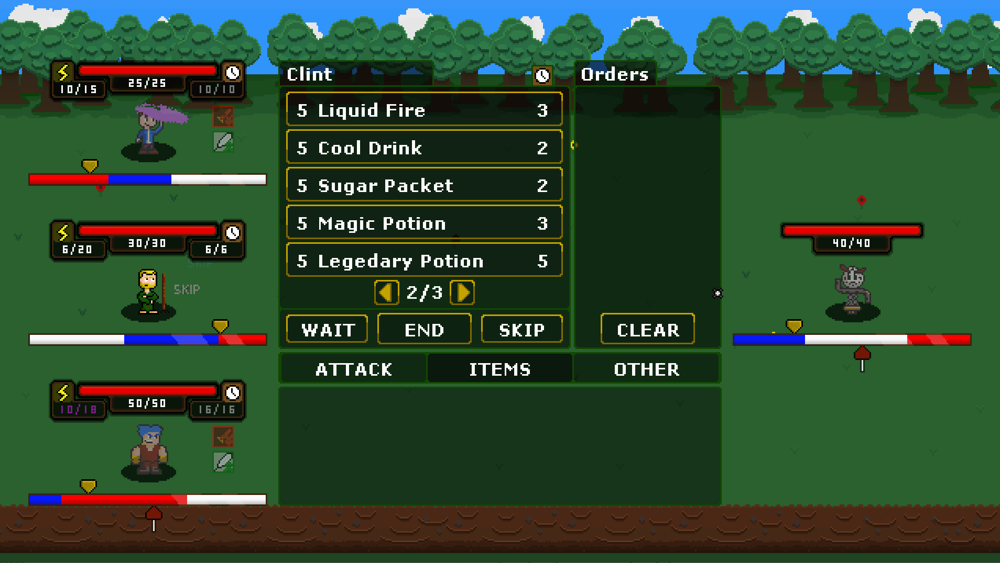
Oliver has an attack that is going to hit Clockman. Now, what we are going to do is add speed to Oliver using Clint. As we do so, pay attention to how Oliver’s attack arrow marker moves on Clockman’s timeline. Everytime we boost the speed, it moves less and less. Why? Because the speed boost is happening for less and less time as it gets closer to the attack. Before, it would simply move it by the same distance that plus twenty five speed would add an instance of adapting based on how close the speed boost is from the execution of the attack. Very complicated, but it works perfectly and that’s such a relief.
The second change has to do with the relationship between the hover arrow and the arrow marker. The hover arrow appears whenever you hover over an attack/item, once you select it and select a target, the hover arrow is replaced by the more permanent arrow marker. Even though these two arrows should both be created at the same exact place, they used two different systems of calculating where they should be. The issue was, the systems sometimes gave different results on where the arrow should be, causing issues. I’ve now fixed it by combining both systems, taking aspects from each, and making one unified system that they both use. So (in theory) the hover and select arrow will also be the same, yay!
Battle Menu Updates
The battle menu itself has gotten a few changes. The biggest change is everything is shifted up slightly and the description is a bit larger. Many things have also been given descriptions when you hover over them such as the “Skip”, “Wait”, “End” and “Clear” buttons. The size of the attack/item hitboxes have also been increased slightly.
You may have also noticed that the damage values for each attack has been removed. This is because of the new damage calculation since the damage is much more dependent on the enemy you are selecting. Now, the intended approach of seeing how much damage will be dealt is by hovering and using the hover mechanics.
And finally, the order pane is now labeled as “Orders” and the order numbers have been moved from the beginning of the order name to the top right corner of the order. Overall the whole menu is a bit cleaner and more symmetrical thanks to all of these changes.
That’s All Folks!
That’s all I’ve got for this update! It may not seem like that much has been added, but I assure you, there is a lot more I didn’t touch on. Actually, I did leave a lot of stuff out intentionally to avoid spoilers and give me more to talk about later. How sneaky is that?
I’ve been super busy recently, so work on Phases has been slowing down a bit but I really hope to keep working on it. While I can’t say for certain, a release this year is looking unlikely, but a 2022 release is looking more reasonable than ever! I’ll keep updating on Twitter for as long as possible. If you see me not posting anything in a month, the game isn’t cancelled, I’m either just busy or can’t show what I’m working on. Thank you for understanding.
I think I’m going to aim for maybe one more Update 10 related dev-log if I can do it without spoilers. If not, I may do another dev-log unrelated to Phases just to have something. I really don’t use this website as much as I should and I want to change that, we’ll see what happens.
There is a lot to look forward to so I hope you are excited! Talk to you all soon!